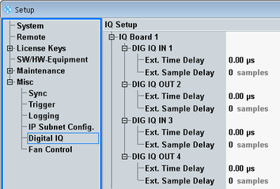

Digital IQ
The "Digital IQ" section is only present if the R&S CMW is equipped with an I/Q board (option R&S CMW-B510x/-B520x).
The settings are not relevant for "external fading" scenarios of signaling applications. But they apply, for example, to "IQ out - RF in" scenarios.

Setup - Digital IQ
These settings inform the instrument about the delays in the individual external I/Q paths. For each I/Q connector, you can enter the delay either in time units or in samples. Relevant delays can be caused by instruments or devices inserted into the external path, e.g. an R&S EX-IQ-BOX or an R&S SMU200A.
The entered delay is, for example, used to correct measured round-trip times, the timing of trigger events or the time relation between downlink and uplink signals.
Remote command:n/a